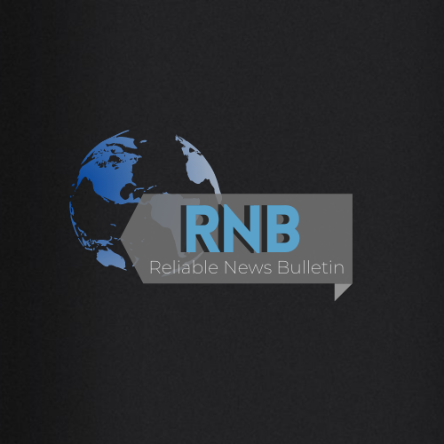

Creating your company's brand is essential for attracting clients. The more a consumer connects with your brand, the more inclined they are to return to you. Developing a loyal client base may assure long-term success and assist grow sales of your company's products and services.
We believe that establishing a business brand online is proven to be effective especially nowadays we are currently facing a pandemic, but that doesn't mean it's easy to establish a brand online. In fact, whether you establish it physically or through online ways, it will still be challenging.
Our Brand
The very first thing you’ll see on our logo is the 3 letters in the middle, which stands for Reliable News Bulletin. Our first and original brand name was Excelsis Noticias, wherein Excelsis is Latin for reliable, and Noticias is Spanish for a news bulletin. Soon after, my group mates and I realized that the audience will not recognize it for a news channel, that is why we went for the English translation.
The next thing is the globe or what you call the “earth” which indicates that our channel will not cover only local news, but we’ll cover news across the world too, but of course, we’ll still focus more on local. Then, below the “RNB”, we included the meaning of it, which is the Reliable News Bulletin. Lastly, the colors and some graphics we used are just for the attraction of the audience and viewers.
Our Tagline is: "From the People, By the People, For the People, RNB". Below this, you'll see our Logo, after that is the section that contains our Intro Video.
A logo doesn't sell (directly), it identifies. RNB: Reliable News Bulletin's accomplished logo.
What can We Improve?
News and Media have totally invaded our culture due to the rise of phones as well as social media applications such as Facebook, Twitter, Instagram, and many more. Many young people, on the other hand, continue to avoid reading news as they believe it is inaccessible to them. Because young people account for such a high number of internet users, it is critical to appeal to them and make news media more entertaining. Here are some ways we are planning to conduct to enhance our news content:
- We might make our content short, yet informative, detailed, specific, direct, and impactful to our audience.
- Of course, we will discuss the topic that is timely, and relevant .
- We are also planning to add more photos, music, and video, to be more interactive and for a more engaging multimedia experience.
- As hard as our team can, we will try to reach out to our audience’s requests.
- We will also have a simple design that is appealing to our audience.
- In addition, we will try producing articles from a point of view that could be more interesting and easy to understand.
- Lastly, we can make our news videos modern, since most of the news contents nowadays are traditional, in that way, we can attract more audience and we can be more unique.